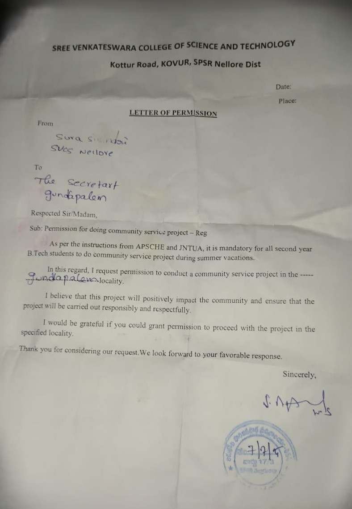

Day 1: Seeking Permission
Visited the Sachivalayam to obtain official permission for the “Community Service Project”. Permission was successfully granted by the MRO.

Survey on Health & Hygiene Awareness | 15-05-2025 to 18-05-2025
Visited the Sachivalayam to obtain official permission for the “Community Service Project”. Permission was successfully granted by the MRO.
Continued the survey, focusing on community awareness regarding:
The survey highlighted that most people were unaware of government health programs and neglected daily exercise and cleanliness habits.
Organized a community awareness program where we discussed and demonstrated: